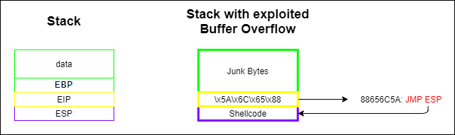
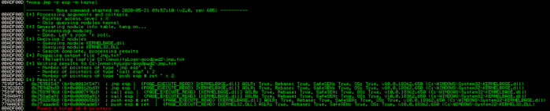
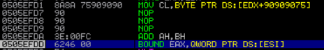

Overwrite the EIP
The
payload is costituited of 3 parts:
1.
Junk Bytes: offset that we need for the payload before overwrite
EIP, found before
2.
EIP overwrite: we have to overwrite
EIP register (used by the RET instruction) with an address that contain a command
JMP ESP (or CALL ESP).
The command
JMP ESP will be executed and the program will jump to ESP.
3.
Shellcode: ESP register that now contain our Shellcode
Attention: • If ASLR is enabled for the process that contain the address
JMP ESP, the OS will loads the process and consequently
the address at different locations in memory at every reboot.
• The
EIP address when passed
must be passed in a swapped order because we are in a
little-endian notation this mean that is
written first the lowest in memory (less significant) and then the highest in memory (most significant)
example: the address 758A8A91 must be written as \x91\x8A\x8A\x75
2. Search for a
JMP ESP
(or CALL ESP) in the disassembled application
•
Immunity Debugger: To find
JMP ESP (or CALL ESP) in the application we can simply disassemble it(with Immunity Debugger or IDA) and then search for the instruction with CTRL+F.
If we want to search the command in all the modules and libraries loaded by the program we have to select
Search for → All Commands in all modules•
mona.py from Immunity Debugger:
!mona jmp -r esp -m kernel
→ used to specify the register we want to target
-m → select a specific module or more than one
 copy an address that point to JMP/CALL command and add it to the payload in hexadecimal and in a swapped order
example: the address 758A8A91 must be written as \x91\x8A\x8A\x75
◇
2.1 Test
payload = "\xc3"*22 #Junk Bytes needed to reach the EIP
payload+="\x91\x8A\x8A\x75" # overwrite EIP address with the address of the JMP/CALL ESP
payload+=("\x90\x90\x90\x90\x90\x90") #Shellcode, this is the code that we want execute on the target machine if the Buffer Overflow works
#to test if the shellcode is executed we can put here some NOP operation instructions
0x90 → is the hexadecimal value for the NOP operation instruction, when a program encounter it, it simply continue with the next instruction
▪
After the execution and the CRASH of the program EIP register:
Latest instructions executed:
 {kind=link}